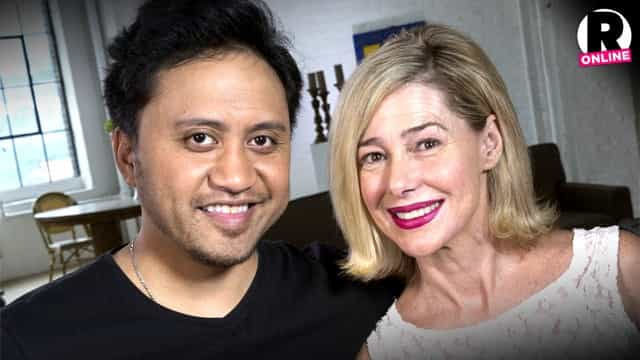

< < < Back
Childless Feminist Journalist Tries To Secretly “Breastfeed” A Cucked Politician’s Child – Return Of Kings
Journalist and previously childless feminist Leah McLaren published an article recently about how she tried to “breastfeed” the infant son of “conservative” Canadian politician Michael Chong. The incident occurred some years ago when she was at a house party and alone in a room with the child. Very bizarrely, she knew neither Chong nor even whose baby it was. Because she was not lactating, the very notion that she had attempted to breastfeed is a fabulist claim.
An unsuspecting Michael Chong interrupted the pretend mother, who appears to have been close to 30 when the event took place. According to the article, her dreams of being a pseudo-wet nurse were denied just as she was in the process of taking her clothes off. What a bummer, Leah!
The newspaper McLaren writes for, The Globe and Mail, suspended her for a week, but apparently only in secret. A rival of the publication, The Star, reported that McLaren has been prohibited from either talking about the article or her purported suspension. Because she has strong family links to The Globe and Mail, firing her seems never to have been an option on the table.
I am all for recognizing the innate differences between men and women. Women breastfeed, men cannot. But McLaren’s actions–and the self-righteousness way in with which she revealed them–fits most definitions of assault and perhaps perilously strays into a form of self-gratifying sexual assault. Bear in mind that we are hearing her justifications for what occurred.
I believe we need to separate Return Of Kings‘ usual advice that women should be traditional and raise children from a self-entitled woman deciding to try and “breastfeed” a complete stranger’s child. Whatever unconscious desire McLaren had at the time to abandon her feminism and become a run-of-the-mill mother, wanting, let alone attempting to place your nipple in someone else’s child’s mouth is intolerable. You or I may want to fuck an attractive female, but it doesn’t mean we do it without permission.
This should be considered a form of attempted sexual assault

What’s the difference between a mentally depraved feminist trying to “breastfeed” a stranger’s child when she’s not lactating and what Mary Kay Letourneau did with a then 12-year-old boy?
A breast is a secondary sexual organ. Feminists love to complain about the fetishization of breasts, but support charging a man for touching them when a woman claims he did not have consent to do so. They cannot have it both ways. A non-lactating (and I would also argue a lactating) stranger has zero business trying to put their nipple in the mouth of someone else’s child. Aside from the health risks involved, a pacifier would usually suffice.
Moreover, McLaren claimed in her article, which was subsequently deleted by her employer, that she “wanted to give him what he wanted.” This kind of rationalization is the exact sort we hear from child abusers who can actually be charged. Because an infant seemed to have “enjoyed” or merely did not protest something, a person defending inexcusable actions will justify themselves by stating there was no adverse impact on the child.
The father of the kid is trying to become Canada’s “conservative” leader
“This incident happened over 10 years ago. It was odd, no doubt, but not of any real consequence,” Chong said in an emailed statement Monday.
— The Star reporting on Michael Chong’s response to Leah McLaren’s article
What baffles me even more than McLaren’s behavior is Michael Chong’s dismissal of it. He called it “odd… but not of any real consequence.” Even a second or third glance at the context of this remark forces one to think about spineless, cucked pseudo-conservatives who talk a great game about traditional values, but immediately buckle whenever the pressure of holding onto them comes along.
There is a possibility that Chong was seething in private about Leah McLaren, but felt a stronger reaction would jeopardize his chances of winning the leadership contest. The place of Conservatives in Canada is tenuous at the best of times, despite the party being more to the left than the Republican Party in the US (and with no countervailing rightwing force to steal votes from it, like in France or the UK). Even former Prime Minister Stephen Harper, a very capable and thankfully more traditional Conservative politician, only won one majority government from the three elections in which his party triumphed.
On balance, however, I would say that Michael Chong really does believe what he said. He was, after all, for the deplorable “anti-Islamophobia” motion passed by the Canadian Parliament, which adds yet another plank to Canada’s abolishment of common sense. Rather than debating the clear and present danger that Islamic immigration poses to Canada, leftwing politicians and “rightwing” ones keen to appease SJWs have acquiesced to the same delusions of the crowd changing Facebook profile photos after serious terrorist attacks. Chong’s silence on issues like the persecution of Gregory Alan Elliott by rabid feminists also does not bode well for any future role he has in the upper echelons of the Conservative Party, either as a leader (which is unlikely) or a senior spokesman.
Though I can understand the fact that Michael Chong’s son is still a child and drawing more attention to this could be detrimental for the young lad, I am left disappointed by the candidate’s response. I have next to no faith he will offer any serious defense of conservatism if he cannot even defend his son more forcefully, or at least provide a better criticism of someone like Leah McLaren.
Meanwhile, men are demonized as would-be pedophiles for no reason
Guy takes Star Wars photo for his kids, gets called a pedophile by tens of thousands of people.
Some readers may criticize my stance and say what Leah McLaren did was not really “that bad.” I think the problem with such an assessment is that it offers no real solution to the growing numbers of men stigmatized for doing literally nothing around children, all while women like McLaren receive a pathetic one-week sabbatical for far more obscene actions which they admit to. This is just one example, but in my native Australia a man was shamed for taking a selfie for his children in a crowded mall, as if he were some kind of would-be pedophile. In another more recent case, Fairfax Media, a tireless critic of ROK, decided to publish a woman’s diatribe about how all men are potential pedophiles wishing to violate her daughter.
Once society reflects the mores we condone, we can decide to split hairs over what women secretly longing for children can and can’t do without a serious backlash. Yet for now, our only choice is to come down hard on such behavior. After all, if a man even talks to a child to say hello in the modern world, he’s liable for an accusation of being a creep or dangerous sexual predator. But it seems that the response when a woman tries to put her breast in the mouth of a child she does not even know is nothing more than a whisper.
If feminists and others wish to create an environment of “stranger danger” against men, we should do exactly the same thing against them, especially about much more serious matters like Leah McLaren’s antics.
Read More: 5 Ways To Profit Bigly From Miserable, Childless, And Career-Obsessed Feminists